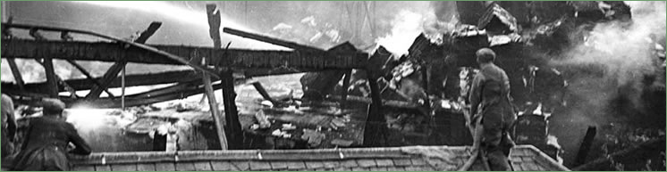

Mill Fires
 |
{kind=link}
Related page link: Esk Mills |
{kind=link}
|
Report from ‘The Scotsman’ - Friday, 8th April 1938 TWO MEN IN INFIRMARY The injured men, two of whom are detained in Edinburgh Royal Infirmary are:-Charles Muir, Ainslie Place, Kirkhill. Penicuik- fractured leg and strained back; Thomas McFarlane, John Street, Penicuik- fractured leg; District Officer William Sutherland Brodie, of Edinburgh Fire Brigade-bruises to right shoulder and right knee; and Robert Muir. Imrie Place, Penicuik-cut forearm. The three Penicuik men were using a hose belonging to the works fire brigade when a pillar of the blazing shed fell on them as a wall collapsed. Charles Muir and McFarlane were pinned under the pillar, and District Officer Brodie received his injuries in going to their assistance. A message was sent to Dr Charles W. Badger, Penicuik, who gave medical attention to all four men. Charles Muir and McFarlane were then taken to, Edinburgh Royal Infirmary, where they are detained. Despite the bruises to his shoulder and knee, District Officer Brodie continued to direct the work of the Edinburgh firemen, and did not stop until his detachment was relieved. NO LOSS OF WORK EXPECTED A representative of The Scotsman, was informed that the fire is not expected to cause any loss of work at the mills, where about 400 people are employed. Although there never was any hope of saving the pulp shed or any of its contents the rest of the mills are undamaged. It was seen at once that the outbreak was serious. A wooden building packed with tons of highly combustible material, the shed was soon blazing furiously. Calls were sent to Penicuik and Edinburgh Fire Brigades. |
Meantime the works fire brigade went into action. The Penicuik firemen with their engine were quickly on the scene, and not long afterwards an engine arrived from Edinburgh.
Although twelve lines of hose were trained on the burning shed, all were required to prevent the flames from spreading to nearby buildings, which include a turbine house and an engineering shop. Within an hour the walls had begun to collapse, and soon the roof crashed in.
Fortunately there was a plentiful supply of water from a pond beside the mills which is fed by the River Esk.
LIKE HUGE FURNACE The fire was at its most spectacular once the walls and roof of the shed had collapsed. It was like a huge furnace. Bales of wood pulp, stacked in great piles, were burning slowly but fiercely. Tongues of flames licked around the bales, and sparks were thrown high into the air. Where the building had been were only fire and smoke. So intense was the heat that some of the water poured on the flames was turned into clouds of steam. The glow from the outbreak lit up the sky and could be seen from many places in the surrounding district. On the fringes or the blaze lay burned-out bales of wood pulp now bundles of ashes. Charred beams had fallen amongst them. Near stood firemen with lines of hose, all their efforts appearing to make little or no impression on the flames; Fierce though the outbreak remained it had been brought under control, however, there was now no danger of its spreading, but that was still only because of the tons or water that were being poured from all sides. The flames extended over a large area, the shed having been 70 yards long and 50 yards wide. They caught several railway waggons which were standing near, and these were badly damaged.RELIEFS FROM EDINBURGH The detachment of Edinburgh Firemen were relieved after they had been fighting the flames for several hours, an engine and crew from the London Road station arriving to take their place. The second detachment gave way to fresh men at midnight, and Edinburgh Fire Brigade are ready to send another contingent at seven o’clock this morning should they be required. The firemen worked to the continuous hum of machinery, the mills being kept running throughout the outbreak. Three shifts are always maintained there in order to facilitate the work of the mills. Although large crowds watched the blaze, they did not impede the work of the firemen. The mills are situated in a hollow on the outskirts of Penicuik, and the rising ground on several sides made a natural grandstand on which onlookers gathered. As a precaution, however, Inspector Ness, Penicuik, summoned extra police from the surrounding district for duty at the mills. |


Penicuik Historical Society :: Penicuik Town Hall :: 33 High Street :: Penicuik :: EH26 8HS
e-mail :: info@penicuikpapermaking.org
e-mail :: info@penicuikpapermaking.org
© Penicuik Historical Society :: site by Wallace Web Design